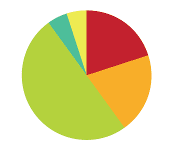

Ha-kir is a fun and intuitive way to create music by touching a wall. This project was done in collaboration with Or Leviteh as part of a course in Interaction design hands on (IDHO) at the Holon Institute of Technology (HIT).
Concept – We wanted to create a new use for a wall, one of the most common objects in our lives. On the wall, we tried to create a fun and intuitive way for people to create music. This instrument is suited for people who do not know how to play music. It does not require experience to be played well.
We believe that walls are the most appropriate place for a person to create interactions because it can save space and give a lot of content in return. The wall is 2.5 X 1 meter, so many people can come and play simultaneously.
We created a major musical scale so that people would not be able to create musical dissonances. Another interesting feature we created was color-coded gloves whose colors matched a musical instrument. Some musical instruments were considered cold and some were considered warm, so we ran a survey in order to help people choose a color that fits the instrument. People can't know what instrument they are given until they use it so people focus on the interaction with the wall instead of choosing and comparing instruments.
Functions - On the wall the Y-axis symbolizes the notes. The higher your hand is, the higher the tone is. The X-axis represents the stereo, so people can control and switch between speakers. In addition, the volume decreases and increases in accordance with the surface area in contact with the wall. Thus, the volume is decreased if just a finger touches the wall and increased by contact of the full hand..
Finally, there is a visual indication of where you touch the wall to assure you that it is you who creates the sounds. The indication leaves a trace of pixilation that follows your hand wherever it goes, like a trace of music – an echo.
Project finished on February, 2009

{kind=link}
{kind=link}